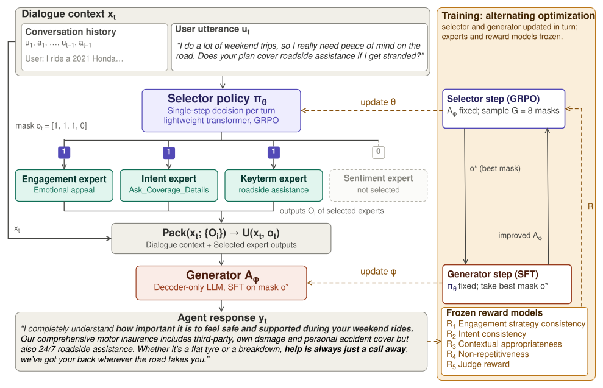
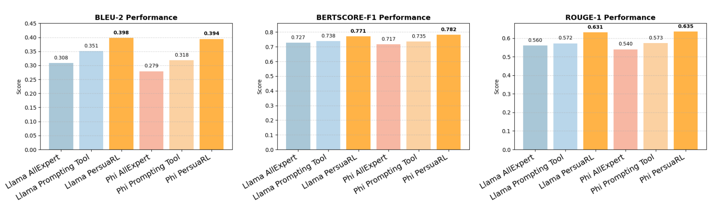

EMNLP Findings 2026•IIT Patna
PersuaRL: Reinforcement Learning-Driven Multi-Expert Selection for Persuasive Dialogue Generation in Insurance
1 Indian Institute of Technology Patna, India
2 Ramakrishna Mission Vivekananda Educational and Research Institute, India
3 Accenture Labs, Bangalore, India
* Corresponding author
Insurance agents have to persuade, not just inform. PersuaRL learns — by reinforcement — which persuasion experts to consult at every turn, and human raters score its replies 4.36/5 on persuasive effectiveness where the same model after supervised fine-tuning scores 2.46.

Abstract
Large Language Models (LLMs) are revolutionizing digital communication by powering conversational agents deployed across domains such as customer service, digital sales, and insurance. These agents can understand user input, retrieve relevant information, and generate coherent responses. However, while they excel at factual communication, they often lack the ability to engage in truly persuasive, context-sensitive dialogue, especially in domains like insurance, where trust and clarity are critical. Building on this need within the insurance domain, our work focuses on improving the persuasiveness of digital agents. To support this, we introduce InsureDial, a Persuasive Insurance Dialogue dataset, designed to capture the nuances of persuasive communication specific to motor insurance interactions. We introduce PersuaRL, a reinforcement learning based framework that equips LLM-driven dialogue agents with the ability to adaptively explore, select, and coordinate strategies across multiple expert modules, guided by the evolving dialogue context, to achieve more effective persuasion. We conduct extensive automatic, human and qualitative evaluations on two benchmark persuasion dialogue datasets, including our InsureDial. Our evaluations consistently demonstrate that PersuaRL outperforms baselines, generating contextually appropriate and highly persuasive responses.
framework to learn expert-selection policies for persuasion with reinforcement learning, rather than routing by prompt or heuristic.
dialogues in InsureDial, the first persuasive dialogue corpus for motor insurance, annotated on four layers.
human-rated persuasive effectiveness over supervised fine-tuning, on the same backbone.
How PersuaRL Works
Prior persuasive dialogue systems rely on static prompting, heuristic routing, or monolithic generation. PersuaRL instead treats expert coordination as a context-conditioned decision problem, running each dialogue turn through four coupled stages.
① Selector — GRPO
At each turn the selector emits a binary mask over the four experts — whom to consult is a learned action, not a heuristic.
Group Relative Policy Optimization samples several selections per state, scores them with a frozen generator, and updates the policy with a clipped objective under KL regularization.
② Four Expert Modules
Each expert is fine-tuned for one persuasion competency:
- Engagement — the turn's strategy, six labels.
- Intent — the user's goal, six intents.
- Keyterm — terms like zero depreciation.
- Sentiment — Positive, Neutral or Negative.
③ Composite Reward
- R1 / R2 — strategy and intent consistency.
- R3 — contextual appropriateness.
- R4 — non-repetitiveness.
- R5 — judge score, Prometheus-7B.
β = (0.15, 0.15, 0.20, 0.15, 0.35), plus penalties against over-selection.
④ Training & Inference
The generator is fine-tuned on InsureDial first; the selector is then optimised against it, so the two co-adapt over multi-turn dialogue rather than following a fixed routing rule.
Single A100 80GB, 25–28 h per model. AdamW at 2×10−5, ε = 0.2, nucleus sampling (T = 0.8, p = 0.9).
InsureDial
No persuasive dialogue dataset existed for the motor insurance domain. InsureDial covers policy quotes, coverage details and price inquiries, with terminology drawn from leading motor insurance providers. It was built with a human-in-the-loop pipeline — 50 expert-validated seed dialogues, prompt selection by annotator agreement, GPT-4o generation, then human review — and every dialogue is annotated for engagement strategy, user intent, sentiment and key domain terms.
Table 1. InsureDial statistics. The corpus is split 80/5/15 with diversity maintained across splits.
| Metric | Train | Validation | Test |
|---|---|---|---|
| Number of dialogues | 1545 | 97 | 289 |
| Number of utterances | 21134 | 1462 | 4170 |
| Avg. utterances per dialogue | 6.84 | 7.54 | 7.21 |
| Avg. words per user utterance | 14.38 | 17.21 | 17.19 |
| Avg. words per agent utterance | 53.78 | 59.74 | 56.94 |
Results
PersuaRL is instantiated on Qwen-2.5-3B, Llama-3.2-3B and Phi-3-mini, each evaluated in three regimes: single-shot, after supervised fine-tuning, and with PersuaRL.
Table 2. Automatic evaluation on InsureDial. Higher is better on every metric; best result within each model group in bold. Green rows are ours.
| Model | BLEU-2 | METEOR | BERTScore F1 | Distinct-2 | ROUGE-1 | LLM Judge |
|---|---|---|---|---|---|---|
| Qwen 2.5 3B Instruct (Single) | 0.090 | 0.128 | 0.562 | 0.965 | 0.310 | 2.66 |
| Qwen 2.5 3B Instruct (SFT) | 0.305 | 0.217 | 0.727 | 0.991 | 0.556 | 3.28 |
| PersuaRL (Qwen 2.5 3B) | 0.375 | 0.250 | 0.760 | 0.991 | 0.609 | 3.81 |
| Llama 3.2 3B Instruct (Single) | 0.106 | 0.135 | 0.585 | 0.937 | 0.334 | 2.86 |
| Llama 3.2 3B Instruct (SFT) | 0.339 | 0.232 | 0.742 | 0.989 | 0.584 | 3.48 |
| PersuaRL (Llama 3.2 3B) | 0.398 | 0.276 | 0.771 | 0.989 | 0.631 | 3.95 |
| Phi 3 mini 128k (Single) | 0.181 | 0.156 | 0.641 | 0.980 | 0.429 | 2.79 |
| Phi 3 mini 128k (SFT) | 0.362 | 0.242 | 0.752 | 0.988 | 0.600 | 3.39 |
| PersuaRL (Phi 3 mini) | 0.374 | 0.261 | 0.762 | 0.990 | 0.611 | 3.86 |
The Single → SFT → PersuaRL ordering holds on every backbone. SFT adapts a model to the insurance domain but saturates at surface-level generation; PersuaRL pushes past that plateau, adding up to 0.07 BLEU-2 and 0.05 ROUGE-1 over the fine-tuned model, alongside the largest gains in judge score. The same ordering holds on the out-of-domain DEAL negotiation benchmark reported in the paper, suggesting the learned selector policies capture domain-agnostic persuasion patterns.
Annotators with insurance-dialogue expertise rated 30% of a randomly sampled test set on five dimensions, each on a 5-point scale: Fluency (F), Engagingness (E), Persuasive Effectiveness (PE), Strategy Appropriateness (SA) and Resistance Handling (RH). F, E and SA are judged per turn; PE and RH per dialogue.
Table 3. Human evaluation on InsureDial. Higher is better on every dimension. Green rows are ours.
| Model | F | E | PE | SA | RH |
|---|---|---|---|---|---|
| Llama 3.1 8B Instruct (Single) | 2.47 | 2.31 | 2.13 | 2.39 | 2.94 |
| Llama 3.1 8B Instruct (SFT) | 3.11 | 2.94 | 2.46 | 2.88 | 3.38 |
| PersuaRL (Llama 3.1 8B) | 4.12 | 4.51 | 4.36 | 4.29 | 4.46 |
| Qwen 2.5 3B Instruct (Single) | 2.69 | 2.45 | 2.29 | 2.68 | 3.10 |
| Qwen 2.5 3B Instruct (SFT) | 3.19 | 2.98 | 2.86 | 3.10 | 3.61 |
| PersuaRL (Qwen 2.5 3B) | 3.94 | 4.22 | 4.23 | 4.06 | 4.32 |
| Mistral 24B Instruct (Single) | 2.98 | 2.81 | 2.53 | 2.74 | 3.27 |
| Mistral 24B Instruct (SFT) | 3.23 | 3.34 | 3.10 | 3.19 | 3.76 |
| PersuaRL (Mistral 24B) | 4.26 | 4.39 | 4.54 | 4.33 | 4.45 |
The gap human raters see is far larger than the automatic metrics suggest: on Llama-3.1-8B, persuasive effectiveness rises from 2.46 after supervised fine-tuning to 4.36 with PersuaRL — and the pattern repeats on every backbone, at every scale tested.
Removing any expert degrades performance. Engagement and Intent matter most; Keyterm and Sentiment contribute less individually but still produce a measurable decline. Replacing the learned selector with always-on experts or prompt-based routing also loses ground — ROUGE-1 drops from 0.631 to 0.572 for prompting on Llama-3B.
Table 4. Expert-module ablation on the Qwen 2.5 3B backbone. Green row is ours.
| Configuration | BLEU-2 | METEOR | BERTScore F1 | Distinct-2 | ROUGE-1 |
|---|---|---|---|---|---|
| PersuaRL (full) | 0.375 | 0.250 | 0.760 | 0.991 | 0.609 |
| − Engagement Expert | 0.284 | 0.202 | 0.704 | 0.983 | 0.539 |
| − Intent Expert | 0.293 | 0.216 | 0.713 | 0.983 | 0.558 |
| − Keyterm Expert | 0.302 | 0.223 | 0.721 | 0.984 | 0.566 |
| − Sentiment Expert | 0.324 | 0.231 | 0.736 | 0.990 | 0.583 |

Citation
@inproceedings{persuarl2026,
title = {PersuaRL: Reinforcement Learning-Driven Multi-Expert Selection for
Persuasive Dialogue Generation in Insurance},
author = {Kirti, Rohan and Ghosh, Akash and Vats, Aryan and Ghosh, Niladri and
Shriparn, Shipra and Ramnani, Roshni and Maitra, Anutosh and
Saha, Sriparna},
booktitle = {Findings of the Association for Computational Linguistics:
EMNLP 2026},
year = {2026},
publisher = {Association for Computational Linguistics},
eprint = {2609.01188},
archivePrefix = {arXiv},
url = {https://arxiv.org/abs/2609.01188}
}